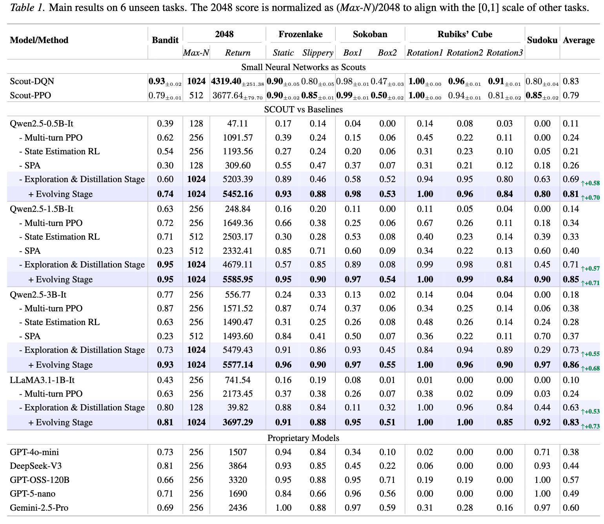

While Large Language Models (LLMs) excel in language-based agentic tasks, their applicability to unseen, non-linguistic environments (e.g., symbolic or spatial tasks) remains limited. We demonstrate the primary bottleneck is the prohibitive cost of exploration: mastering these tasks requires extensive trial-and-error, which is computationally unsustainable for parameter-heavy LLMs.
To address this, we propose SCOUT (Sub-Scale Collaboration On Unseen Task), a novel framework that decouples exploration from exploitation. We employ lightweight "scouts" (e.g., small MLPs) to probe environmental dynamics at a speed and scale far exceeding LLMs. The collected trajectories are utilized to bootstrap the LLM via Supervised Fine-Tuning (SFT), followed by multi-turn Reinforcement Learning (RL).
Empirically, SCOUT enables a Qwen2.5-3B-Instruct model to achieve an average score of 0.86, significantly outperforming proprietary models, including Gemini-2.5-Pro (0.60), while saving about 60% GPU hours.
Our framework addresses the efficiency bottleneck by splitting the learning process into three distinct stages:

Table 1: Main results on 6 unseen tasks. SCOUT (Exploration & Distillation + Evolving) significantly outperforms baselines across various model sizes (0.5B, 1.5B, 3B). Notably, the Qwen2.5-3B model with SCOUT achieves an average score of 0.86, surpassing Gemini-2.5-Pro (0.60).
We evaluated SCOUT on diverse environments including Rubik's Cube (Spatial), 2048 (Long-horizon planning), and FrozenLake (Stochastic). The results demonstrate that SCOUT effectively bridges the gap between linguistic priors and physical dynamics, achieving state-of-the-art performance with significantly reduced computational costs.
@article{scout2026,
title={Language-based Trial and Error Fails in the Era of Experience},
author={Anonymous Authors},
journal={Under Review at ICML},
year={2026}
}